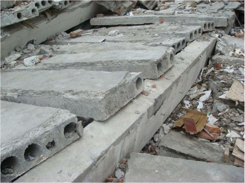

Conexión entre el muro y el diafragma inexistente [FWCN]
No hay conexiones entre el diafragma(s), piso y las paredes que son capaces de transferir fuerzas en el plano y restringir los desplazamientos hacia el exterior de las paredes.

Conexión inadecuada entre el techo y el muro en estructura de madera (FEMA 310, 1998)

Ejemplo de conexiones techo-muros de un diafragma de madera, que pueden ser inadecuados (adapted from FEMA 172, 1992)

Ejemplo de conexiones de una losa compuesta de hormigón y cubierta de acero con muros de mapostería u hormigón, que puede ser inadecuada (adapted from FEMA 172, 1992)

Piso de concreto reforzado colado in situ soportado por muros de concreto. La conexión puede no ser adecuada si las juntas de construcción no son capaces de transferir cargas laterales a lo largo de la interfaz.


Conexiones techo-muro mediante armaduras de acero y muros de mampostería que puede ser inadecuada si el soporte otorgado por el muro no ha sido adecuadamente diseñado y/o construido (J. Adams)

Soporte para losas de hormigón hueco proporcionado por muros de mampostería que pueden ser insuficientes (J. Adams)

Apoyo insuficiente para los forjados huecos de hormigón prefabricado proporcionadas por vigas de apoyo que contribuyeron al derrumbe de un edificio en el terremoto de 2008 Wenchuan, China (J. Dai)

Colapso de muro fuera de plano reportado en algunos edificios de mampostería no reforzada en el terremoto de 2011 en Christchurch, Nueva Zelandia; el edificio mostrado en la foto tenía conexiones muro-piso inadecuadas (K. Elwood)